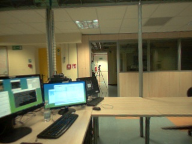
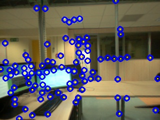

Testing Sample - After adding Stabilizaion
- Sriram K. Kumar
Frame number :
Please use the Left and Right Arrow key on your keyboard to navigate.
Browse through the images with the navigation buttons. To straight away go to a specific frame, enter the frame number (1-647) and press the next button.
Left RGB image (Original)

Disparity image

Annotation and anomaly